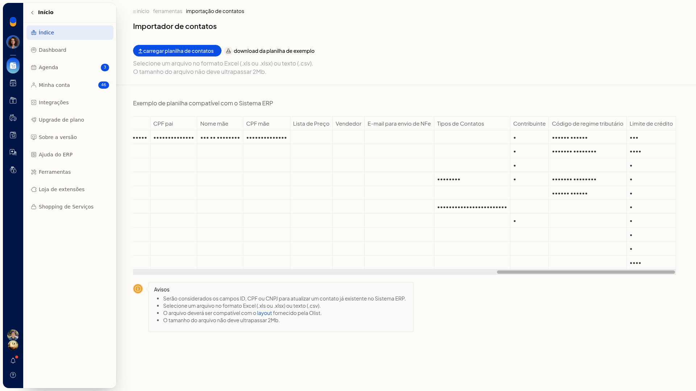

Importar contatos de uma planilha
No ERP da Olist, você importa contatos a partir de uma planilha e inclui vários cadastros de uma vez. Se a planilha trouxer ID ou CPF/CNPJ de um contato que já existe, esse cadastro é atualizado.
A importação fica em Cadastros > Clientes e Fornecedores, no Importador de contatos.
Pré-requisitos
- Arquivo Excel ou CSV de até 2 Mb, no layout da planilha de exemplo do Importador de contatos.
Importante
- A planilha precisa seguir o layout da planilha de exemplo.
- ID ou CPF/CNPJ na planilha atualizam um contato já existente.
Instruções
-
Acesse Cadastros > Clientes e Fornecedores.
-
Clique em Mais ações.

-
Clique em importar clientes e fornecedores de uma planilha.

-
Baixe a planilha de exemplo.
-
Preencha a planilha no layout do exemplo, em Excel ou CSV, com até 2 Mb.
As colunas do exemplo são:
- ID
- Código
- Nome
- Fantasia
- Endereço
- Número
- Complemento
- Bairro
- CEP
- Cidade
- Estado
- Observações do contato
- Fone
- Fax
- Celular
- Web Site
- Tipo pessoa
- CNPJ / CPF
- IE / RG
- IE isento
- Situação
- Observações
- Estado civil
- Profissão
- Sexo
- Data nascimento
- Naturalidade
- Nome pai
- CPF pai
- Nome mãe
- CPF mãe
- Lista de Preço
- Vendedor
- E-mail para envio de NFe
- Tipos de Contatos
- Contribuinte
- Código de regime tributário
- Limite de crédito

- Clique em carregar planilha de contatos para efetivar a importação. ID ou CPF/CNPJ na planilha atualizam contatos já existentes.
Informações adicionais
Tipos de Contatos na planilha de exemplo
Na coluna Tipos de Contatos, os rótulos ficam separados por barra vertical.